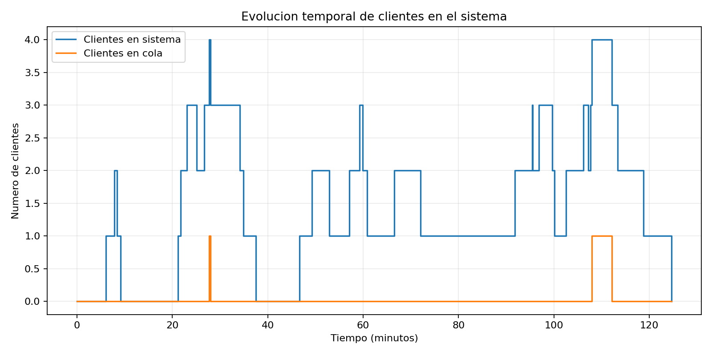

Grafica de simulacion
Resultado generado por el programa.
Volver a graficas
Manual

Muestra como cambia el numero de clientes en el sistema y en cola durante el tiempo simulado.
Anterior
Pausar automatico
Siguiente
Cambio automatico activo
Abrir otra grafica